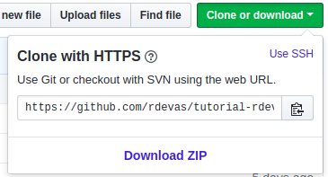

Capítulo 2: Controlando as versões usando Github
O que você precisa antes de começar
Passo 1: Instalando o Github
Crie uma conta gratuita no GitHub ou logue se você já possui uma.
Instale o Git específico para o seu Sistema Operacional aqui.
Verifique se o Git foi instalado corretamente. No terminal, digite o seguinte:
git --versionDeverá retornar a versão do Git instalada, como abaixo:
git version 2.16.2Passo 2: Configurando o Github
Configure seu perfil Git na sua máquina. No terminal digite:
git config --global user.name "user-do-seu-github"Em seguida, digite:
git config --global user.email "seu-email-usado-no-github"Para checar se o Git já está configurado, você pode digitar:
git config --listPasso 3: Envie seu app para o GitHub
No seu perfil do GitHub clique em "new repo"
 e dê um nome (exemplo: portfolio), breve descrição, escolha a opção "público",
e certifique-se de que a opção "Inicializar esse repositorio com README" não está selecionada,
e então clique em "Criar repositório".
e dê um nome (exemplo: portfolio), breve descrição, escolha a opção "público",
e certifique-se de que a opção "Inicializar esse repositorio com README" não está selecionada,
e então clique em "Criar repositório".
No terminal, acesse a pasta raiz do seu projeto
cd portfolioE digite o comando abaixo para inicializar um repositório Git no seu projeto
git initAgora vamos criar um arquivo chamado README.md que conterá uma breve descrição do seu projeto.
Se o seu Sistema Operacional for Linux ou Mac, digite:
touch README.mdSe o seu Sistema Operacional for Windows, digite:
type nul > README.mdPara verificar se o repositório Git foi iniciado corretamente no seu projeto, verifique o estado do seu versionamento.
git statusEsse comando acima, irá listar todos seus arquivos novos ou alterados.
Então digite
git add .Isso confirmará todos os arquivos que serão versionados.
E depois digite:
git commit -m "Criar o arquivo README.md"Esse comando marcará uma nova versão do seu projeto.
Para enviar a sua primeira versão do seu projeto para o GitHub, entre na pagina do repositório criado anteriormente e clique no botão "Clone of Download" e copie o link, como mostra na imagem abaixo:
E então digite:
git remote add origin [link-que-voce-copiou-no-passo-anterior]Esse comando criará uma conexão com o GitHub. Dessa maneira você sempre terá um backup do seu código lá.
E então digite:
git push -u origin masterEste será o comando para enviar o seu versionamento para o GitHub.
Para entender mais sobre o git, acesse Git scm
Agora vamos inciar o projeto!